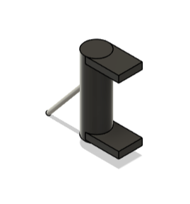
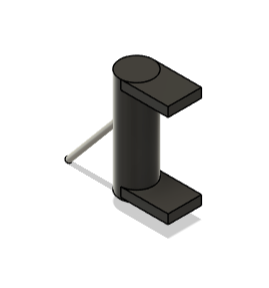

1. Spool
This precision-engineered spool system enables controlled deployment and retrieval of materials in space environments. It features advanced tension control and automated winding mechanisms for reliable operation in zero gravity conditions.
Technical Specifications:
- Diameter: 150mm
- Capacity: 500m of material
- Motor: Stepper motor drive
- Material: Carbon fiber composite
- Control: Precision positioning system
2. Printer
This state-of-the-art 3D printer enables on-demand manufacturing of critical components directly in space. Utilizing advanced additive manufacturing techniques, it can produce replacement parts and specialized tools with precision-engineered materials.
Technical Specifications:
- Print volume: 200mm × 200mm × 200mm
- Resolution: 0.1mm layer height
- Materials: Thermoplastic polymers
- Power consumption: 200W
- Temperature range: 180-280°C
3. Centrifuge
This high-speed centrifuge provides artificial gravity simulation and enables material separation processes in microgravity environments. Essential for scientific research and material processing applications in space missions.
Technical Specifications:
- Max RPM: 10,000
- Capacity: 6 sample tubes
- Force: Up to 10,000g
- Control: Variable speed
- Safety: Automatic imbalance detection
4. Slag/Waste Containment
This secure containment system safely stores and manages waste materials and manufacturing byproducts in space. Designed with multiple safety layers and environmental protection features for reliable operation in harsh space conditions.
Technical Specifications:
- Volume: 5 liters
- Material: Stainless steel
- Temperature range: -50°C to +200°C
- Pressure rating: 15 bar
- Seal: Hermetic sealing system
5. Decontamination
This advanced decontamination system ensures sterile conditions aboard the satellite through multi-stage cleaning and UV sterilization processes. Critical for maintaining equipment integrity and crew safety in closed space environments.
Technical Specifications:
- Method: UV sterilization + chemical cleaning
- Coverage: 360° surface treatment
- Cycle time: 30 minutes
- Power: 50W UV lamp
- Safety: Automatic shutdown systems
6. Satellite Deposition
This precision coating system applies protective layers and specialized materials to satellite components using advanced vapor deposition technology. Essential for enhancing durability and performance in the harsh conditions of space.
Technical Specifications:
- Deposition method: Physical vapor deposition
- Thickness range: 0.1-10 microns
- Materials: Metals, ceramics, polymers
- Vacuum level: 10^-6 Torr
- Substrate heating: Up to 400°C